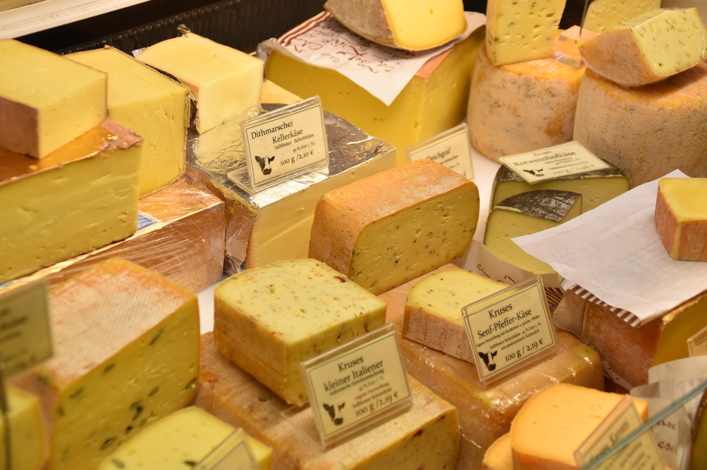

Cheese is a dairy product, derived from milk and produced in wide ranges of flavors, textures and forms by coagulation of the milk protein casein. It comprises proteins and fat from milk, usually the milk of cows, buffalo, goats, or sheep. During production, the milk is usually acidified and the enzymes of rennet (or bacterial enzymes with similar activity) are added to cause the milk proteins (casein) to coagulate. The solids (curd) are separated from the liquid (whey) and pressed into final form.[1] Some cheeses have aromatic molds on the rind, the outer layer, or throughout. Most cheeses melt at cooking temperature.

Over a thousand types of cheese exist and are currently produced in various countries. Their styles, textures and flavors depend on the origin of the milk (including the animal's diet), whether they have been pasteurized, the butterfat content, the bacteria and mold, the processing, and how long they have been aged for. Herbs, spices, or wood smoke may be used as flavoring agents. The yellow to red color of many cheeses is produced by adding annatto. Other ingredients may be added to some cheeses, such as black pepper, garlic, chives or cranberries. A cheesemonger, or specialist seller of cheeses, may have expertise with selecting the cheeses, purchasing, receiving, storing and ripening them.[2]

For a few cheeses, the milk is curdled by adding acids such as vinegar or lemon juice. Most cheeses are acidified to a lesser degree by bacteria, which turn milk sugars into lactic acid, then the addition of rennet completes the curdling. Vegetarian alternatives to rennet are available; most are produced by fermentation of the fungus Mucor miehei, but others have been extracted from various species of the Cynara thistle family. Cheesemakers near a dairy region may benefit from fresher, lower-priced milk, and lower shipping costs.

Cheese is valued for its portability, long shelf life, and high content of fat, protein, calcium, and phosphorus. Cheese is more compact and has a longer shelf life than milk, although how long a cheese will keep depends on the type of cheese.[3] Hard cheeses, such as Parmesan, last longer than soft cheeses, such as Brie or goat's milk cheese. The long storage life of some cheeses, especially when encased in a protective rind, allows selling when markets are favorable. Vacuum packaging of block-shaped cheeses and gas-flushing of plastic bags with mixtures of carbon dioxide and nitrogen are used for storage and mass distribution of cheeses in the 21st century
